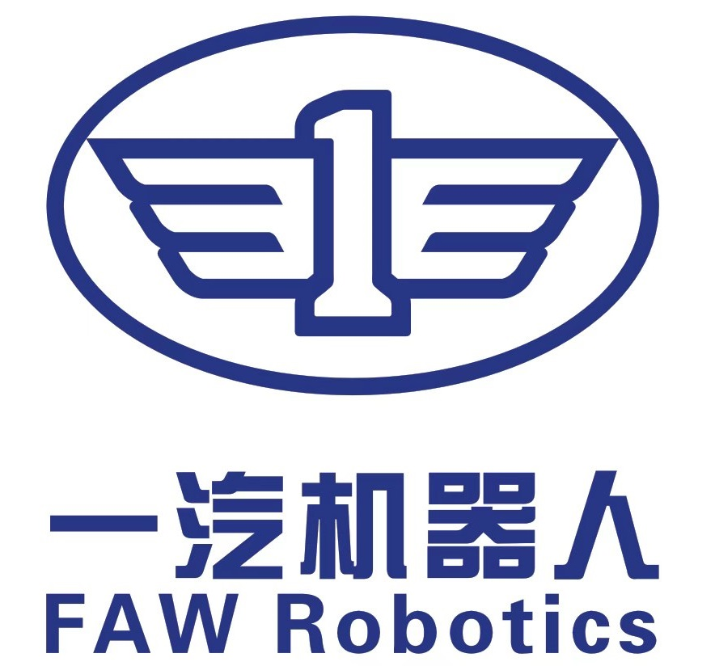

Stabilizing 3D Continuum-Arm Rollouts via Equilibrium Anchoring and Feature-Lifted Residual Learning
1Intelligent Biomimetic Design Lab, Peking University
2State Key Laboratory of Turbulence and Complex Systems
3FAW Robotics 4Robotics and Control Lab, Peking University 5Institute of Ocean Research, Peking University
*Equal contribution †Corresponding author
3FAW Robotics 4Robotics and Control Lab, Peking University 5Institute of Ocean Research, Peking University
*Equal contribution †Corresponding author
